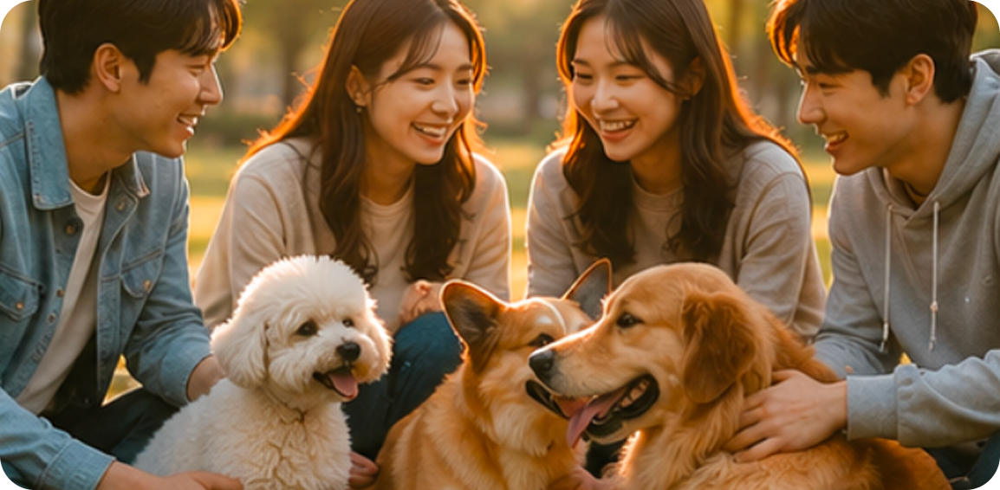
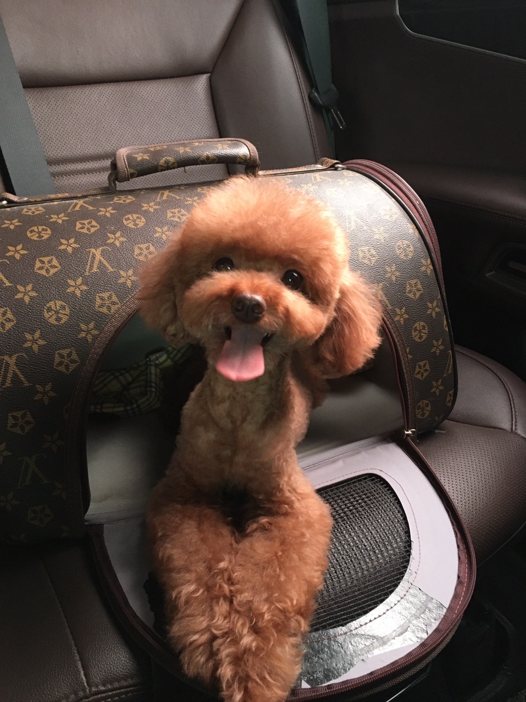
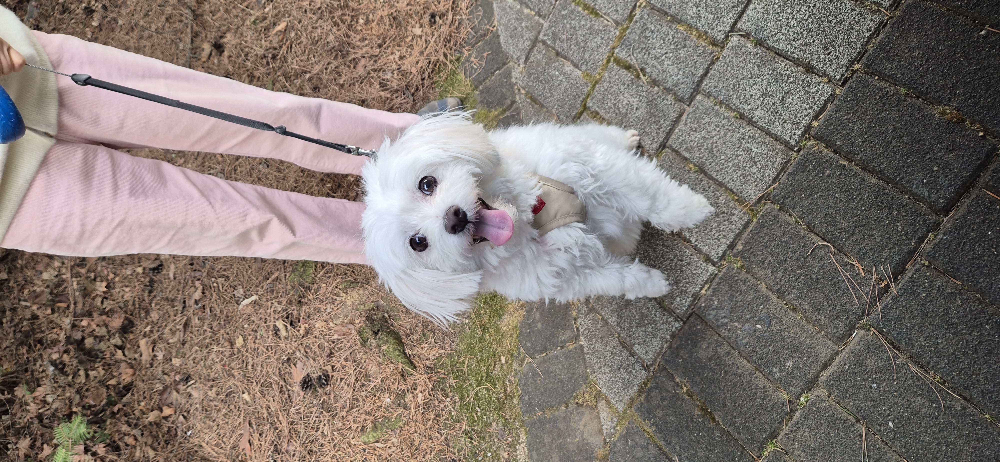
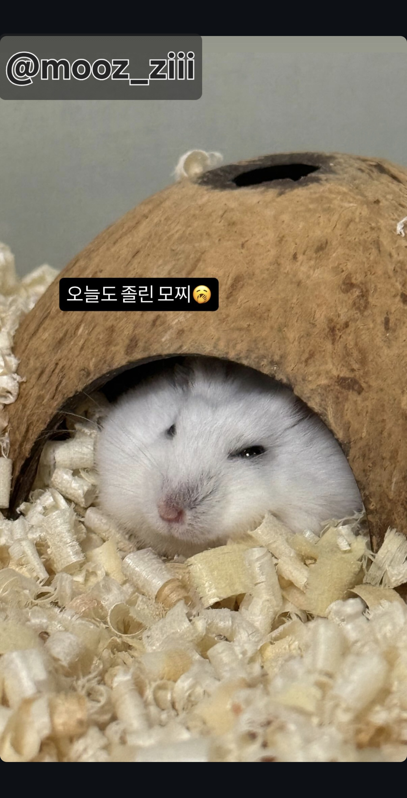

펫을 사랑하는 사람들의 모임
펫의 일상 나눔, 펫 기르는 경험과 꿀팁까지!
펫과 함께 행복한 세상을 만들어갑니다.
왜 PET35인가?
경험을 나누세요
우리 강아지, 우리 고양이의 일상을
자유롭게 공유하세요.
 고민을 함께 해결하세요
고민을 함께 해결하세요
건강, 훈련, 적응 문제까지
실제 반려인들의 경험을 들어보세요.

 공감하는 사람들을 만나세요
공감하는 사람들을 만나세요
같은 관심사를 가진 사람들과 소통하며
반려생활을 더욱 즐겁게 만들어보세요.
HOT 게시글
PET35 커뮤니티의 따끈따끈한 이야기를 만나보세요!
펫 사진 콘테스트
반려동물들의 가장 빛나는 순간을 만나보세요!

243
@co_co

196
@ganadi

147
@mooz_ziii